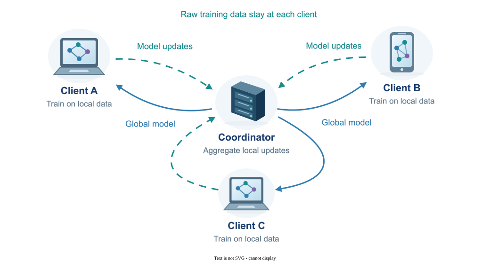

Federated Learning
Federated learning lets multiple devices or organizations train a shared model while keeping their raw training data local. Each participant performs local computation and exchanges model information with a coordinating server, making communication and data differences central challenges. My research examines how local updates affect generalization and how federated split learning can train more efficiently.
System Diagram

My publications on this area
Peer-Reviewed Conference Papers
-
Srijith Nair, Michael Lin, Peizhong Ju, Amirreza Talebi, Elizabeth Serena Bentley, and
Jia Liu,
"FSL-SAGE: Accelerating Federated Split Learning via Smashed Activation Gradient Estimation,"
42nd International Conference on Machine Learning (ICML'25).
arXiv version
ICML
@inproceedings{nair2025fsl, title={FSL-SAGE: Accelerating Federated Split Learning via Smashed Activation Gradient Estimation}, author={Nair, Srijith and Lin, Michael and Ju, Peizhong and Talebi, Amirreza and Bentley, Elizabeth and Liu, Jia}, booktitle={International Conference on Machine Learning}, year={2025}, organization={PMLR} } -
Peizhong Ju, Haibo Yang, Jia Liu, Yingbin Liang, and Ness B. Shroff,
"Can We Theoretically Quantify the Impacts of Local Updates on the Generalization Performance of Federated
Learning?" 25th International Symposium on Theory, Algorithmic Foundations, and Protocol
Design for Mobile Networks and Mobile Computing (MobiHoc'24), 2024
.
arXiv version
@inproceedings{ju2024can, title={Can We Theoretically Quantify the Impacts of Local Updates on the Generalization Performance of Federated Learning?}, author={Ju, Peizhong and Yang, Haibo and Liu, Jia and Liang, Yingbin and Shroff, Ness}, booktitle={Proceedings of the Twenty-fifth International Symposium on Theory, Algorithmic Foundations, and Protocol Design for Mobile Networks and Mobile Computing (MobiHoc'24)}, pages={141--150}, year={2024} }
Explore Machine Learning
- Reinforcement Learning
- Federated Learning
- Continual & Transfer Learning
- Diffusion & Flow Matching
- Interpretability & Generalization